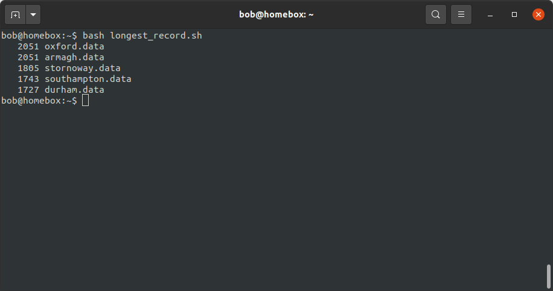

shell scripts#
In this exercise, we will continue working on our task of figuring out which weather station(s) have the most observations, using data downloaded from the UK Met Office.
In the previous lesson, we saw how we can use various shell commands to:
extract .tar files
see the number of lines, “words”, and characters in a text file
use pipes (
|) to combine commandsuse grep and regular expressions for pattern matching
redirect command outputs to a file
So, we have most of the pieces in place in place to be able to write a program (a script) that will do all of these tasks for us, without having to run each command individually. Specifically, we want our program to:
extract the data from a .tar.gz file
split each file into separate header (.head) and data (.data) files
remove the original files (but leave the .head and .data files)
count the number of observations in each .data file
print the top 5 stations, excluding the total
variables#
First, we’ll learn about variables - a name that stores some value. The value can be a string (characters), an integer, a floating point (decimal) number, a filename, a shell command, or some other thing that the computer can use.
To see an example of an environment variable (something used by the system), enter the following at the command prompt:
echo $HOME
This will print the value of the environment variable HOME to the terminal. You should hopefully see that this
prints /home/$USER, where USER is the environment variable corresponding to your username.
We can also create and use our own variables, both in the shell and within scripts. To do this, we use = (the
“assignment operator”):
name=value
Note
There are no spaces between name, =, and value.
bash variable names have the following rules:
the name must start with an alphabetical character (
a-z,A-Z) or an underscore (_).the name may only contain alphanumeric characters (
a-z,A-Z,0-9) or an underscore (_) - all other punctuation has some kind of special meaning.
Note
As you can see above, when we are creating (“assigning”) a variable, we don’t use the $ character - we only use
this when it comes time to do something with the variable.
This is because $ is not part of the variable name, it is used by the shell to indicate that the value of the
variable should be inserted in place of the name.
string manipulation#
Another piece that we need is to be able to manipulate text variables. In the previous exercise, when we split armagh.txt into armagh.data and armagh.head, we had to explicitly type out the filenames.
Here, because we’re going to be working with a number of variable values corresponding to different filenames, we want to avoid having to do this.
To start, let’s assign a new variable, fn, and give it the value armagh.txt:
fn=armagh.txt
You can check that this has worked by viewing the value of fn using echo:
echo $fn
To manipulate the value of this string (text) in the shell, we use curly brackets ({ and }).
To start, we can use # inside of the curly brackets to get the length of the string stored in fn:
echo ${#fn}
This should print 10 to the screen (assuming that the value of fn is still armagh.txt, that is).
Now, if, if we want to extract characters from fn, we can specify the position to start from, along with the length
of the substring we want to extract, using the following syntax:
${name:start:length}
So, to print the first three letters of fn (“arm”):
echo ${fn:0:3}
If we omit length, we print the entire string beginning at start - for example, to print (agh.txt), we could
use the following:
echo ${fn:3}
Now, we could use character extraction to get the name of the station (armagh), but there’s a small problem: the
stations will all have different names, with different lengths.
Rather than something more complicated (for example, taking the length of the filename and subtracting 4 to remove
.txt), we can instead use pattern matching to remove a matched substring with the % operator:
echo ${fn%.*}
This should print armagh to the screen. The way this works is that the shell matches the pattern after %,
starting from the end of the string. It then removes the shortest substring that matches the pattern. So, %.*
means that bash finds the shortest substring that matches the pattern .* (in this case, .txt, and removes it
from the string.
Note
If we want to remove the longest substring, we use %% instead.
If we want to be sure to only match the extension .txt, we can use that pattern instead:
name=${fn%.txt}
If, instead of starting from the end of the string, we want to start from the beginning, we use #:
echo ${fn#*.}
Here, bash will match the shortest substring of all of the characters before a ., and remove them from the string.
In this case, that leaves us with txt.
Note
If we want to match the longest substring, we use ## instead.
In this way, we can use % (or %%) to remove the extension from a filename, or use # (or ##) to extract
the extension.
for loops#
In the previous exercise, we saw how we can use grep and > to split a single file into a header (.head) and
data (.data) file. We have now seen how we can use string manipulation to remove the extension from a filename,
which means we can use shell variables to automatically create a new file with a different extension.
But, we have more than one (37, in fact) file - we really don’t want to have to type a command for each of our 37 files!
Fortunately, we can use a for loop to repeat a command (or set of commands). In the bash shell, a for loop
has the following basic structure:
for thing in things
do
# add your commands here
done
Note
You can see that the text after the # in the code block above is highlighted differently - this is because
# is used to indicate a comment - text that the shell ignores, but that can be read by humans.
Using comments in your scripts is a great way to help other people (especially future you!) understand what the code is actually doing (or is meant to be doing).
When typing commands at the prompt, we don’t typically need to include comments; when we write shell scripts, however, it’s always a good idea to include comments to help make your code more understandable. Future you (and, potentially, other users) will thank present you for including them.
The beginning of the loop is indicated using for, and the list of commands for the shell to execute is bookended
by do (at the beginning) and done (at the end).
The shell will then repeat these commands for each item (thing in the pseudo-code above) in an array (things).
On each pass through the loop, the variable thing takes on the value of the next item in the list. To help
illustrate this, we’ll loop through all of the filenames that begin with a c, and use echo to print the
filename to the screen:
Note
As you type in the code below, notice how the shell prompt changes from $ to >, then back. This is done to
remind us that we haven’t finished typing the full command, since the loop isn’t finished until we have typed
done.
We could also type this on a single line, using a semicolon ; to separate the commands.
for fn in c*.txt
do
echo $fn
done
{kind=link}
On the first pass through the loop, the variable fn has the value camborne.txt, as this is the
first value in the list when the wildcard expression c*.txt is expanded. On the second pass, fn has the
value cambridge.txt, and so on.
putting it all together#
Now, finally, we are able to write a (series of) commands that will split each .txt file:
for fn in *.txt
do
name=${fn%.txt}
grep -E "^\s{3}[[:digit:]]{4}" $fn > $name.data
grep -vE "^\s{3}[[:digit:]]{4}" $fn > $name.head
done
When this loop has finished running, you should now have 37 .head files and 37 .data files.
We’re very nearly finished - all we need to do now is manipulate the output of wc as we did before to get the top
5 stations, but this time using the .data files instead of the .txt files.
Note
Have a look at the output of wc *.head - do you notice any differences between the files? Are there any files
that stand out? Why did this happen, and can you think of a way to fix it?
Now we have a rough idea of how to do each of the steps we need to include in our script:
extracting the files from the .tar.gz file
use a
forloop to split each file into .head and .datause a combination of
wc,sort, andheadto list the top 5 stations in descending orderremove the original data files
To actually write the script, we need to open a text editor and type out the commands, in order:
tar xzf sample_data.tar.gz
cd sample_data/
for fn in *.txt
do
name=${fn%.txt}
grep -E "^\s{3}[[:digit:]]{4}" $fn > $name.data
grep -vE "^\s{3}[[:digit:]]{4}" $fn > $name.head
done
wc -l *.data | sort -rn | grep -v "total" | head -n 5
rm *.txt
Go ahead and do this now, then Save the script to the same directory as your .tar.gz file with the name longest_record.sh. Remember to include comments that help you understand what the script is meant to be doing at different steps!
running the script#
Now that we have a script (longest_record.sh), we can run the script using bash:
bash longest_record.sh
You should see that the top 5 stations in terms of length are printed to the terminal:
{kind=link}
command-line arguments#
To make our script more usable, though, we don’t necessarily want to specify the name of the .tar.gz file to extract - we want to be able to run this script on any .tar.gz file that contains similar data files, without having to edit the script each time we want to run it on a different file.
For this, we can make use of command line arguments - these are variables that are defined on the command line when we “call” the script that the shell then passes to the script when it runs.
For example, we could replace this line:
tar xvf sample_data.tar.gz
with this:
tar xvf "$1"
Note
We are enclosing $1 with double quotes to help protect against users who do not follow the
most important rule for file and directory names.
Inside of the script, 1 is a special variable that takes the value of the first argument on the command line. So,
if we wanted to run our script on a different file, we could now run the script like this:
bash longest_record.sh new_file.tar.gz
Perhaps we would also like to be able to specify how many records to show - in this case, we could replace this line:
wc -l *.data | sort -rn | grep -v "total" | head -n 5
with this:
wc -l *.data | sort -rn | grep -v "total" | head -n $2
Then, we would run our script from the command line like this:
bash longest_record.sh sample_data.tar.gz 10
And we should see the top 10 records returned.
Finally, at the top of the script, it’s probably a good idea to include a few comments about how to use the script, and what it is used for:
# script: longest_record.sh
# author: bob
# purpose: unpack a .tar.gz file, split .txt files into header and data files,
# then print the top <num> longest records
# usage: longest_record.sh <tarfile> <num records>
Note
There are other, much fancier ways to add flexibility to shell scripts, and even print usage/help information to the terminal. For now, though, this is probably enough for our purposes.
If you are interested in learning more, a great place to start is Part 4 of The Linux Command Line by W. Shotts, a free book that you can find (legitimately!) here.
You can also have a look at William’s website, which has a great tutorial for shell scripting, along with more information about the Linux command line.
optional: making an executable#
At this point, we’re done: we have written a shell script that does the tasks that we wanted it to do, and we have made that script more flexible by using command-line arguments. We have also checked that the script runs by executing it using the bash shell.
We could, however, go slightly further and turn our script into an executable file. This way, we could call our script
by simply typing the path to the filename at the terminal, omitting bash:
/home/bob/scripts/longest_record.sh sample_data.tar.gz 10
To do this, we need to do two things. The first thing is that we need to add a shebang to the top of the script, which will tell the shell how to interpret the script1:
#!/usr/bin/bash
This way, when we call the script from the shell, it is interpreted using bash, instead of another interpreter.
Finally, we need to use chmod to change the permissions of our script in order to make it executable:
chmod +x longest_record.sh
Warning
Remember that this will make the script executable at all levels: user, group, and “other”. If you want to restrict
your script so that only the user and group may run it, you should modify the chmod command accordingly:
chmod u+x,g+x longest_record.sh
Now, we can run the script by typing the path to the file:
/your/path/here/longest_record.sh sample_data.tar.gz 10
the PATH variable#
As we have seen, we can “execute” (run) any script/program on our computer by typing the path to the corresponding file, (so long as we have the proper permission to do so).
For example, let’s say we have a script, analysis.sh, in the following folder:
/home/bob/scripts/analysis.sh
We can run this script anywhere on our computer by typing this filename at the command prompt.
When we type a command at the command prompt, the shell is executing a program that is stored somewhere on the
filesystem. For example, type the following to see where the ls program is located on your computer:
which ls
you should see something like:
/usr/bin/ls
When we type a command name, the shell searches through a list of directories (the filepath, stored in the
PATH environment variable), looking for an executable file named ls. When it finds that file, it
executes it.
To see what directories are included in your PATH variable, you can type the following:
echo $PATH
You should see a colon-delimited list of directories - these are the directories that the shell will search through when you type a command name.
We can also change our PATH variable to include other directories, which would enable us to run this script by
typing analysis.sh directly, without including the full path.
To do this, we can add /home/bob/scripts/ to our PATH variable, either by appending it to PATH by
using a colon : to indicate the start of a different file system location:
PATH=$PATH:/home/bob/scripts/
or by prepending it to the beginning of the PATH variable:
PATH=/home/bob/scripts/:$PATH
Note
The shell searches through the directories in PATH in order, meaning that directories at the beginning
are searched first. If there are two (or more) versions of a program in the path, the one in the earliest
directory searched will be the one that the shell runs.
If you want to add directories to your PATH variable, you MUST prepend (or append) them. To “permanently”
add a directory to your path, you can include the following line in your .bashrc file, which should be located
in your home directory:
export PATH=/home/bob/scripts/:$PATH
The export command will make this updated value of PATH available to other programs. The commands in
the .bashrc file are executed whenever you start a new shell session, which means that this new value of PATH
will be used every time you begin a new shell session (for example, when you log into the HPC server).
Warning
With all of that in mind, NEVER EVER try to set the PATH variable directly, like this:
export PATH=/home/bob/scripts # this is really bad, don't do it!
THIS WILL BREAK YOUR SHELL SESSION, because it will overwrite the PATH variable with a single directory,
which most likely contains exactly none of the programs needed to actually use the shell!
notes#
- 1
There are actually a number of different places where different operating systems install
bash, and there are different arguments for/against the “correct” shebang to use here. Because you are likely going to be writing scripts for your own use, rather than developing and distributing software to many users, the best option is likely to use the output ofwhich bashfrom your terminal - in my case, this is/usr/bin/bash.